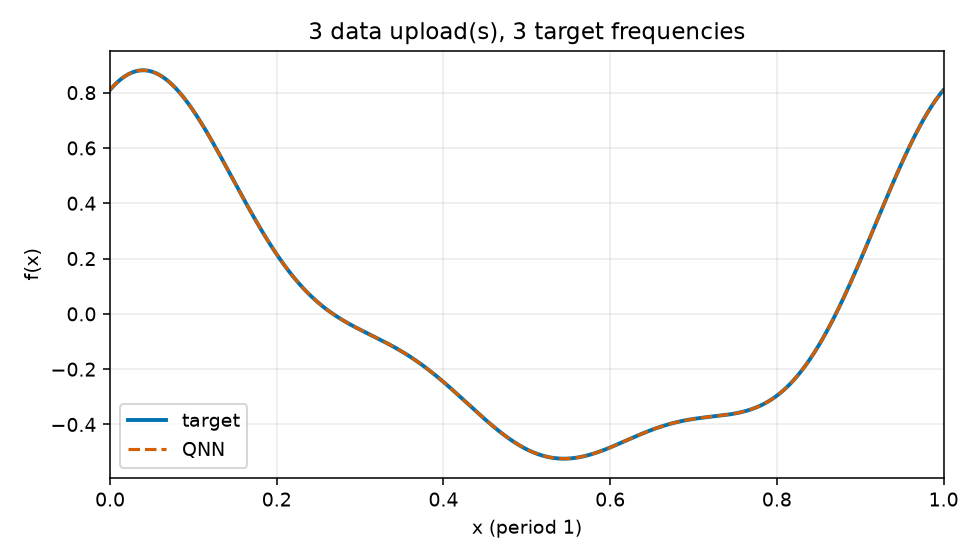
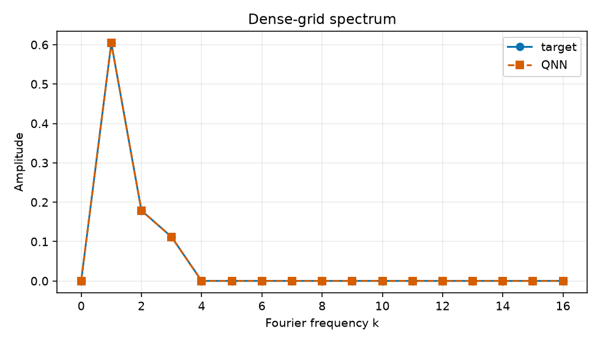

Uploads: 3; target frequencies: 3; train/validation/test: 64/128/512; objective: empirical training MSE only.
{
"run_id": "20261017T023957425587Z_reupload-3_k3_seed-0047_73f55107",
"comparison_group": "periodic-function-mse-zero-offset-reupload-sweep-z1-readout",
"data_uploads": 3,
"n_target_frequencies": 3,
"seed": 47,
"data_seed": 314159,
"dataset_sizes": {
"train": 64,
"validation": 128,
"test": 512
},
"target_components": [
[
1,
0.55,
0.25
],
[
2,
0.16,
0.08
],
[
3,
0.1,
0.05
]
],
"target_offset": 0.0,
"objective": "training-set MSE only",
"optimizer": "L-BFGS-B",
"iterations": 34,
"function_evaluations": 880,
"optimizer_success": true,
"optimizer_message": "CONVERGENCE: RELATIVE REDUCTION OF F <= FACTR*EPSMCH",
"initial_train_mse": 0.3448806040926712,
"final_train_mse": 1.0026677191252132e-15,
"validation_mse": 1.2097421824765734e-15,
"test_mse": 1.1764515264183005e-15,
"known_frequency_fourier_baseline_test_mse": 2.126123450199506e-31,
"target_support": [
1,
2,
3
],
"predicted_support": [
1,
2,
3
],
"frequency_support_threshold_function_amplitude": 0.001,
"support_precision": 1.0,
"support_recall": 1.0,
"target_amplitudes_k0_to_16": [
3.129278520336287e-17,
0.6041522986797286,
0.1788854381999832,
0.11180339887498952,
2.1726615721703016e-17,
2.08338919985173e-17,
7.086725680473781e-18,
1.617279816428843e-17,
3.84330175122779e-18,
9.78496767727623e-18,
2.5811241320803445e-18,
5.559232478380886e-18,
4.36389433120424e-18,
8.739851310843146e-19,
2.3793742160921822e-18,
1.2134355070255081e-17,
6.278752932072422e-18
],
"predicted_amplitudes_k0_to_16": [
1.4645444185786439e-08,
0.6041523012679858,
0.17888546250443435,
0.11180338149840102,
2.2327491346553912e-17,
2.767230358143105e-17,
8.014574209050834e-18,
1.925817549621265e-17,
7.907021892907285e-18,
1.0829060399073115e-17,
1.2282579931471234e-17,
5.3237878817924634e-18,
2.0941804956360294e-17,
1.4483845127936846e-17,
7.9327484973442e-18,
1.3080210279810111e-17,
5.185308300842776e-18
],
"frequency_amplitude_rmse_k0_to_16": 8.094443566571743e-09,
"artifacts": [
"dataset.npz",
"metrics.jsonl",
"parameters.npz",
"parameters.json",
"evaluation_outputs.npz",
"function_fit.png",
"spectrum.png",
"report.html"
]
}
